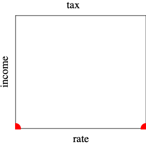
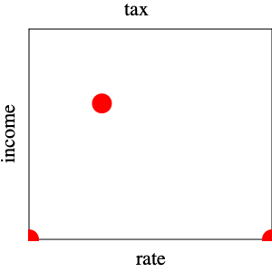
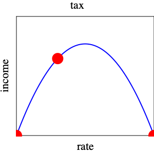
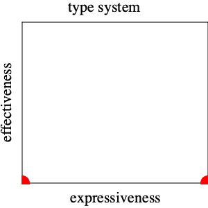
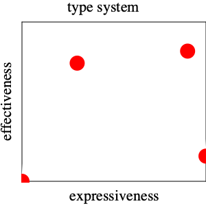

The Laffer Curve of Types
Apr 21 2019
Changed in version 1.4: Sat May 18 12:29:49 EDT 2019,
feedback and types from Robby
Changed in version 1.3: Tue Apr 30 14:14:45 EDT 2019,
Shriram proposed eliminating language potentially offending to liberals
Changed in version 1.2: Mon Apr 29 10:20:00 EDT 2019, prelude
Changed in version 1.1: Wed Apr 24 12:41:46 EDT 2019, feedback and typos from
Sam Caldwell
Ben Greenman
Changed in version 1.0: Sat Apr 13 19:06:32 EDT 2019, initial release
Acknowledgments This ’thought’ benefited a lot from talking to Sam Tobin-Hochstadt, Asumu Takikawa, and Ben Greenman, PhD students who directly worked on Typed Racket with me. Ben also commented on an early draft of this write-up.
Prelude
“I started with Typed Racket, but I found hard to freely explore while having to satisfy the compiler.” – Guimaraes Wanderley on the Racket Users mailing list on April 28, 2019
Dynamically typed programming languages are here to stay, whether programming language researchers like it or not. What we can do is help people migrate from that world to the typed one, once they know they wish to keep and maintain some code.
The Idea Most of my research colleagues think of types as a language of theorems about the expressions of a program language and the type system as a proof system that proves type-theorems about expressions in a particular program. These people are also trained as proto-logicians, and thus they immediately turn to soundness when they are confronted with a new typed programming language.
Over the past 20 or so years, I have slowly changed my mind about soundness. While I still appreciate its relevance, I have come to think of it as only one of several equally important questions. The problem is that the other questions are much more difficult to answer.
Work on migratory typing changed my mind. I prefer migratory typing over gradual typing, even though the latter is clearly a better marketing slogan. I started working on this topic in 1998 (after working on soft typing for the previous eight or nine years). Through the design of a migratory type system, I have come to consider type system design as an exercise in engineering, specifically engineering the interface between programming languages and human beings (HLI).
In search of assessment methods for the quality of the type systems, I have come across the Laffer curve and its origin story. All of us programming language researchers know the idea behind the Laffer curve from engineering and mathematics courses. Concisely, engineering is an optimization process, that is, the maximization of some function subject to constraints. The Laffer curve spells out this insight for the vague discipline of economics. Since type-system design is equally vague at this point, I think we can learn a lot form this analogy.
Note I have explained the ideas in this “thought” to a small number of visitors over the years. Many of these academics dismiss the Laffer curve simply because it is associated with economic policies favored by conservatives. Most don’t even know that President Kennedy also proposed a tax rate decrease to stimulate the economy and increase the tax income of the federal government but without public reference to this curve. So just because “they” thought of it does not mean it may not come with a kernel of truth; just as much as liberal ideas about taxation may also say something acceptable.
The Original Laffer Curve Story
The Laffer curve of taxation dates back centuries. It became widely known under this name in the 1980s when US President Reagan’s economists based their proposal for tax rate decreases on this idea. Rumor has it that Laffer, an economist, explained the idea on a napkin over a dinner with members of President Ford’s White House staff, and that a Wall Street Journal journalist present during dinner named the drawing “Laffer curve.”
  
Simplistically the idea goes as follows. If a government reduces the tax rate to 0%, its tax income will be $0. Along similar lines, if the government imposes a 100% tax rate, people will refuse to work, won’t earn any income, and won’t pay taxes. This suggests the left-most graph in figure 20 with the two red dots on the x axis recording these first two observations about the function of income over rates. The next graph records the evidence that a tax rates in the middle between these two extremes actually produces a positive income for the government. Laffer seems to have drawn a simple-minded upside-down parabola through these points and suggested that raising tax rates beyond a certain point decreases the tax income of the government.
The right-most graph represents the thoughts of a mathematician who may or may not have any insights into taxation. First, the red dot on the right should not be on the x axis because people will work even if the government imposes a 100% tax rate. In return for giving up their entire income, they might receive sufficiently large hand-outs to survive. Or, their work might not be motivated by income; we all know such people. Second, there is no reason to believe that there is a single maximum; the curve might have several local maxima.
Note What the last graph does not bring across is that the income
function might not even be continuous with respect to tax rates. Indeed,
what’s worse is that the shape of the curve may change over time as people
adjust to tax systems and economic conditions.—
The Idea One of the big problems with the Laffer function-curve is that we have little evidence to articulate it properly. A second problem is that it is too uni-dimensional; it relates two pieces of information, leaving out elements that policy makers of various stripes wish to factor into their decisions, too. So anybody who wishes to use the vague curve for some action on tax rates may do so with imagined arguments. Although I doubt that a truly precise and universal formulation is possible, improving the existing evidence could usefully inform policy makers.
The point of my “thought” is that the discipline of programming language design is in a similar position, and my goal is to spell out some ideas on this state of affairs for a small sub-area of recent interest (mine and that of many other academic and industrial researchers).
Applying the Laffer Curve (Story) to Types and Type Systems
Now let’s replace “tax” with “type system,” “rate” with “expressiveness,” and “income” with “effectiveness.”
The design of a static type system often comes with claims that it
identifies and eliminates potentially erroneous program. I have often
referred to this as the “negative” expressive power of a type system.
For this section and the next, I am going to adopt this view, but as
my paper on expressiveness points out, power always comes
with two sides—
With “expressiveness” of a type system tentatively clarified, let me turn to “effectiveness,” which has several different aspects. At a minimum, effectiveness covers the prevention of run-time exceptions and measures the ease to get programs to run and run fast enough. The two ideas are in conflict, as making type systems more effective comes at the expense of making them easily usable.
It’s all pretty vague but it allows me to begin drawing fragments of the Laffer curves of types:

The left-most point represents dynamic typing, which tags all values and uses these tags to check at run time whether a primitive operation may operate on some given arguments. In this world, there is only one expressible “theorem” and all expressions satisfy it. Of course, such a simplistic type system does not prevent any run-time exceptions, so we should not consider it an effective type system. By contrast, there is an “extremist” type system that is guaranteed to identify all potentially erroneous programs, and it is represented by the red dot on the right. It simply doesn’t bless any programs as correct, meaning no program is ever allowed to run. Hence, it is appropriate to assign this type system a score of 0 effectiveness, too, because effectiveness also implies “getting programs to run easily.”
Empirical evidence suggests that there are effective type systems. Let’s record this observation as red dots between the two extreme one:

For example, many programmers consider Java’s type system an improvement over C++’s. Similarly, type system experts think of Haskell’s type system as yet more effective than Java’s. But also note that far fewer programmers master Haskell’s type system than Java’s, so it isn’t just all pluses and no minuses.
In short, we may wish to imagine the graph of the effectiveness function of types as follows:
It ignores the stupid type system that prevents all programs from running. Thus, its right-most red dot is placed a bit above the x axis. Think of a refinement or a dependent type system that is effective in preventing almost all run-time exceptions. But, because such a type system also imposes a much higher burden on the developer than Java’s or even Haskell’s, the pay-off is much lower than for those and the dot is below theirs.
Expressiveness and Effectiveness in Migratory Typing
The design of a migratory typing system has, among others, the same goal in mind as that of static type systems, but it does not start from a blank state. Instead the designers must study how programmers have used the dynamically typed language to which they are adding types. These programmers don’t just create code in a willy-nilly fashion; they think about it, and any observant researcher can recognize type-like reasoning in these programs. Also see Sam Tobin-Hochstadt’s explanation. Hence the designers of migratory type systems must ask what “expressiveness” and “effectiveness” mean in the context of migratory typing and how they are related.
Expressiveness
If we accept that developers working with dynamically typed languages use type-like reasoning, the purpose of adding a migratory type system is to turn (possibly un)documented type annotations into explicit ones and to check them. Here is a simple example from the (Typed) Racket world:
|
|
On the left we see how a conscientious Racket programmer writes the factorial function, with an unchecked but documented type signature, a basic comment, and an example formulated as a unit test. The right side shows how little has to change to turn this module into a fully typed and type-checked one.
The example demonstrates two important points. First, the type of this factorial function uses Natural, not just Integer. Second, the function definition does not have to change for the type checker to bless the module. This precision and this simplicity do not come for free, however. We, the designers of Typed Racket, intentionally provide Natural and a whole set-based hierarchy of numeric types. Also, our type system checks if expressions so as to confirm the induction scheme for Natural and similar set-based type definitions.
A different team of designers might not have bothered with support for Natural. They might have expected programmers to switch to Integer. Similarly, such a team might not have added a modicum of dependent typing to avoid the need for Java-like casts in the branches of an if expression that discerns the different parts of a union type.
Research Results For Typed Racket, we adopt metrics to make the above observations measurable. For example, we report for a substantial corpus of Racket programs how many type annotations have to be added to migrate the code, how many lines of code have to change to accommodate the type checker, and so on. These numeric results significantly differ between the functional part of Racket and the object-oriented one, suggesting that migrating the former will be much easier than the latter.
At first glance, these results may suggest that more expressiveness is better for migration but this clearly isn’t obviously true. Using Natural as the input type for ! means that programmers may have to write additional code to accommodate the type checker when they wish to use the function. More generally, numeric code may often fail to type check for obscure syntactic reasons, with one code variant working well and another one not working out at all. Shriram Krishnamurthi noticed this tension first and responded with the design of a progressive type system. I consider this work a symptom of the flaws of the “more expressiveness is better” perspective on expressiveness.
Granularity
So let’s say we belong to a team that owns a code base written in some dynamically typed language and wishes to migrate this code to a typed sister language.
If the code were in Typed Racket, our developers would have to add type annotations to entire modules at once. I coined the phrase macro migratory typing for this degree of granularity.
The designers of Reticulated Python, Siek and Vitousek, made a rather different choice, and I refer to this as the micro approach to migratory typing. Reticulated allows developers to annotate individual function and method parameters, their return types, individual fields in classes, or individual variables. Just because one such feature is annotated with a type does not mean that others have to be annotated.
Yet another approach, dubbed concrete and implemented as StrongScript for example, fits neither the micro nor macro approach. From an implementation perspective, the concrete generalizes the idea of run-time tags to run-time type-tags so that the run-time system can check whether methods are called properly, not just language primitives. The price for the StrongScript developer is that migrating a single method is hard if a derived class overrides this method. All overriding methods must also be annotated with types at the same time, and further extensions must use types for this method, too. By contrast, other features of the class do not need to be typed.
Research Conjectures This micro approach requires much less work from the developer than a macro based one. Yes we did violate good coding practices in the past, for good reasons at the time and for reasons that illustrate why we are programming language researchers. For a small module, such as the factorial one above, adding a type annotation is not an onerous task; but, some Racket modules are thousands of lines long, and migrating such a large module into the typed world all at once is clearly a heavy burden. Also, the developer of a rather complex algorithm for an otherwise mundane piece of code may wish to annotate this algorithm with types to express some basic design ideas—
and leave the rest of the code alone. As for the concrete approach, I consider it fatally flawed. It forces a programmer to migrate too many methods at once, even if someone else is responsible for the derived ones and might belong to someone else.
Hence, developers are probably more likely to use micro-migratory typing than macro-migratory. I do not yet know how to formulate these conjectures in a testable manner.
Granularity and type Dynamic
The presence or absence of type Dynamic is a second factor concerning granularity. Some migratory type systems map every missing type annotation to Dynamic. To make this viable, the compiler inserts run-time casts from Dynamic to appropriate types for primitive operations automatically, that is, they explicate the workings of a dynamically typed language. The designers of such type systems don’t speak of “migration” but “refinement,” meaning a developer replaces an occurrence of Dynamic with a more precise type.
In principle, the choice of adding type Dynamic to a migratory type system is orthogonal to the choice of macro, micro, or concrete granularity. In practice, micro migratory typing always comes with type Dynamic but currently there is no implementation of a macro migratory type system with this universal type.
Research Conjecture The inclusion of Dynamic in the type language seems to make it convenient for a programmer to omit a type annotation when it is considered unnecessary or perhaps too time-consuming to re-construct.
Again, I don’t even know how to ask the question precisely but once I/we can, we still need a good method for tackling it.
Error Prevention, Debugging
One purpose of types is to prevent certain classes of mistakes. This holds for both sound and unsound type systems. There’s little need to elaborate on this idea for static typing; there is enough literature out there.
Research Conjecture In the context of migratory typing, the effectiveness of error prevention clearly depends on the expressiveness of the migratory type system. For the macro approach, expressiveness determines which run-time exceptions are prevented, e.g. (! -1). By comparison, the micro approach combined with type Dynamic seems to prevent fewer run-time exceptions.
Strangely enough, nobody has investigated this conjecture even though its answer should help us address the key question, namely, what the benefits of code migration are.
A related but different question is how to debug when a run-time exception is raised. As I have argued many times in public settings, a sound type system narrows down the search for the source of such exceptions a lot more than unsound ones.
While soundness is an obvious concept in the logical context, people seem to accept that it exists on a gray-scale even in implementations of statically typed languages. Java seems to be less type-sound than Haskell in peoples’ mind.
There are migratory type systems, such as TypeScript, that are intentionally unsound for mixtures of typed and untyped code. While these typed languages may prevent some run-time exceptions, they open the door for insidious mistakes due to bad interactions between typed and untyped code.
There are sound migratory type systems but soundness means different theorems to different designers. All of them equate soundness with the idea that typed code can’t be violated by misuse in untyped context. But then there are details.
Ben Greenman’s ICFP 2018 paper shows there is a spectrum of soundness. Max New, at POPL 2019, shows that if we accept basic axioms about the operational semantics of migratory type systems, there is only one sound one, the one that uses Typed Racket’s “wrapper” approach.
Finally, I’ll expand on this line in a revision. type soundness describes only one side of the coin. Some migratory type systems don’t protect untyped code from mistakes in type annotations. Ben Greenman has dubbed this dimension completeness, a new concept in the world of types.
Research Conjecture Migratory typing should help developers with debugging a run-time exception. All of the above factors matter for the debugging task:
The size of statically checked region of code helps developers narrow down from where exceptions may originate.
The presence of Dynamic in the middle of a large region of statically typed code obscures the source of a run-time exception. So it might be a bad idea to add it to the macro approach of migratory typing.
The preceding bullets assume soundness. But, are all forms of soundness created equal?
Completeness ought to help developers, too, because exceptions originating from untyped code might be due to mistakes in type annotations. Assuming the absence of mistakes in types may cause wild-goose chases.
How are we going to study the relationship among these factors?
Performance
If the addition of types causes a program to become so slow to become unusable, migratory typing is a failure.
I conjecture that the designers of all compromised migratory type systems chose the weakened guarantees for the sake of performance. They guessed that properly protecting code is too expensive.
When Sam Tobin-Hochstadt and I started designing Typed Racket, I knew we needed run-time checks. Therefore I wanted to convert modules so that execution would spend a lot of time in code generated from typed fragments and untyped fragments with rarely executed run-time checks in the middle.
Research Results And even with such foresight, I failed to get a Typed Racket with proper performance. In the meantime, our research confirmed that sound and complete migratory typing might be brutally expensive.
So, over the last couple of years performance has emerged as a major
dimension of effectiveness in the world of sound migratory typing—
The Benefits of Adding Types
All of us in this research area take it for granted that migrating dynamically typed code to a typed sister language is a “good thing.” We have abstract arguments. We show concrete examples of how the addition of types revealed hidden bugs (that never bothered anybody before). We allude to the benefits of type annotations for interactions with the IDE. We believe that type annotations help with maintenance tasks down the line.
Research Criticism I have seen some papers that measure the pros and cons of similar programs It also isn’t clear to me whether the research methodology is properly developed, and an experiment in the setting of migratory typing would help to develop this method further. written in distinct statically and dynamically typed programming languages.
The context of migratory typing supplies a much better test bed than a pair of unrelated programming languages. Key is, research on migratory typing has made these questions truly relevant for the working developer, and it enables novel ways of studying the relationship between the various aspects of expressiveness and effectiveness. The syntax of statically and dynamically typed program phrases barely differ. It is thus easy to write programs in either one of these dialects, and a study does not have to account for differences in programming language. In most cases, these dynamically typed languages also have a (reasonably) large developer community that has created many code repositories. A researcher can study these repos to understand the programming idioms of the language and the needs of code migration.
We Need a Laffer Curve of Migratory Typing
The “we” here is the community of programming language researchers, including myself; and the “curve” part denotes the desire to understand the relationship between the various aspects of “expressiveness” and “effectiveness.”
My students and I have tackled some aspects of the above research questions, with results that are somewhat satisfying and that simultaneously just raise more questions than they answer. So there’s a lot to be done.
The challenge concerning performance was the easiest to address—
Of the remaining challenges, none come with easily quantifiable answers, and we lack research methods for all of them. Some of these questions will also require that we dive into the messy area of user studies. And that’s why we probably don’t address these questions.
This state of the world is a real problem, especially considering how many
of us and how many of our aspiring PhD students in programming languages
wish to improve the daily lives of working software
developers. Unfortunately, we find it easier to continue the work we have
been doing all along, and PhD applicants perceive our publications as what
we think will help developers—
So I am calling for some of us to develop methods for the above questions. The answers will help us point our research into directions that will make our work directly relevant to the working developers out there., And I think this would be a good thing for us and them.
Other Papers
One group of researchers, with various collaborators, has actively investigated various aspects of the relationship between static types and API usability (which uses Dart, arguably a programming language with a modicum of migratory typing), software maintainability, and usability of undocumented software. Interested readers can also follow links from these papers to somewhat related topics in this direction.
|
|
|
|
|
|
|
|
|
|
Postscript I served as a reviewer of Antti-Juhani Kaijanaho’s dissertation, which explained, argued for, and illustrated “evidence-based programming language design.” I do not have this particular research direction in mind with my thought, but such research should serve us all as inspiration to look for the correct methods and to develop methodologies for studying the usefulness of these methods. Also, by coincidence, Viera Proulx pointed me to an opinion piece (by Stefik and Hanenberg, whom I mentioned above) that seems to argue a similar point more broadly, just as I was writing up this thought. As indicated with a margin note, I conjecture that these researchers and I strongly differ on what we could consider an adequate method and, worse, what we would consider evidence in support for a programming language or a even just a language construct. For example, I am afraid that due the chosen method and its particular use, people might reject lambda in a programming language because the user study of lambda in C++ expressions supplies “evidence” that closures are unusable features. |
|
|
|
|
|
|
|
|
|
|